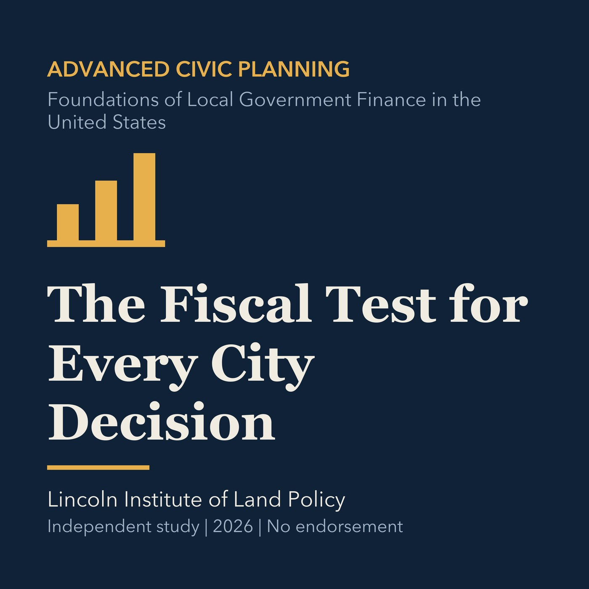

EPISODE 28
The Fiscal Test for Every City Decision
Frames fiscal analysis around recurring revenues, lifecycle costs, risk, and service outcomes.

- Stable GUID
6d962a36-31e2-560d-8e6e-41862335975f- Release
- advanced-civic-planning-v2026.2
- SHA-256
e10842d1e6abb1a5e69e0a14cef479b5ea5f797647b64a367d5801d0327524a1